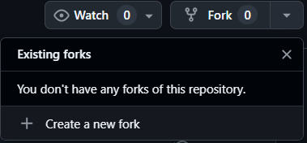
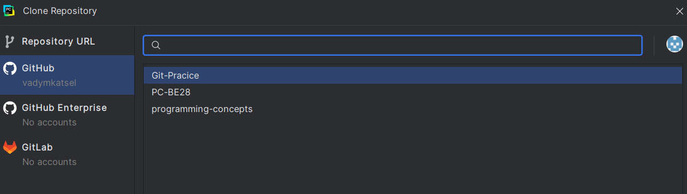
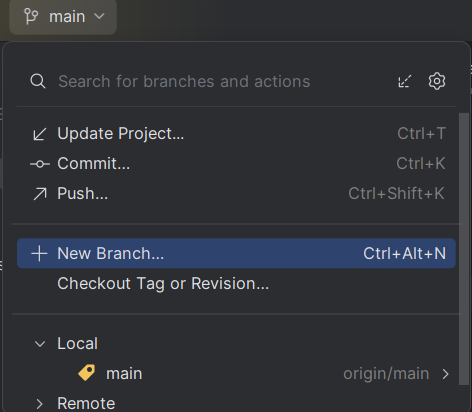
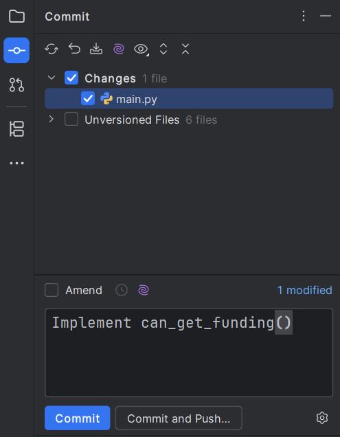
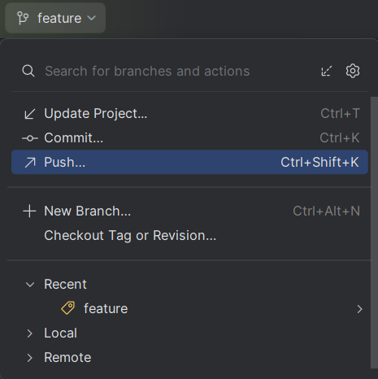
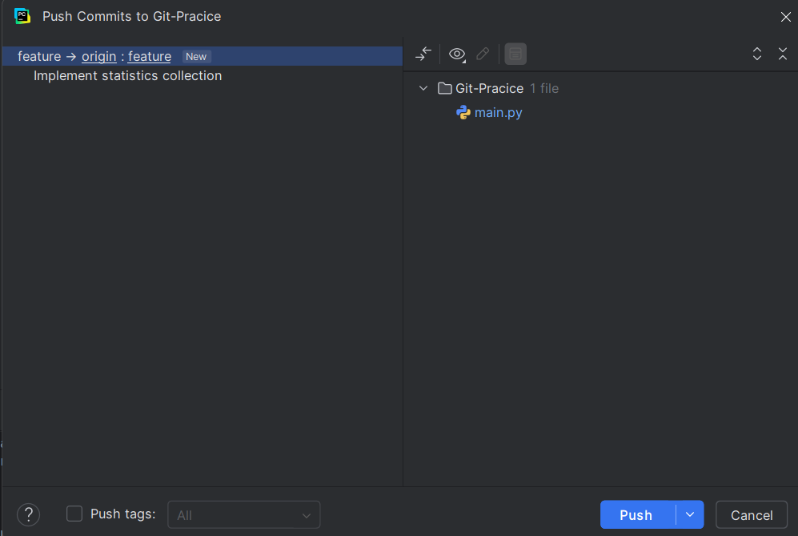
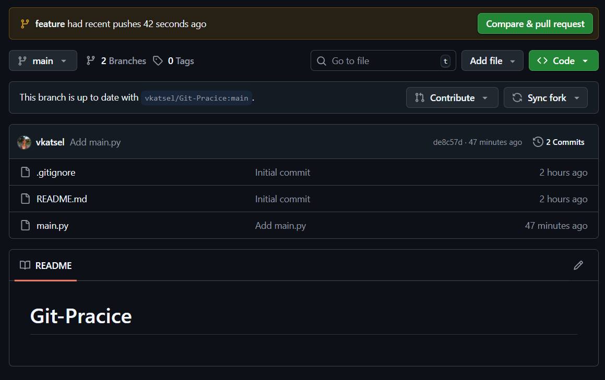
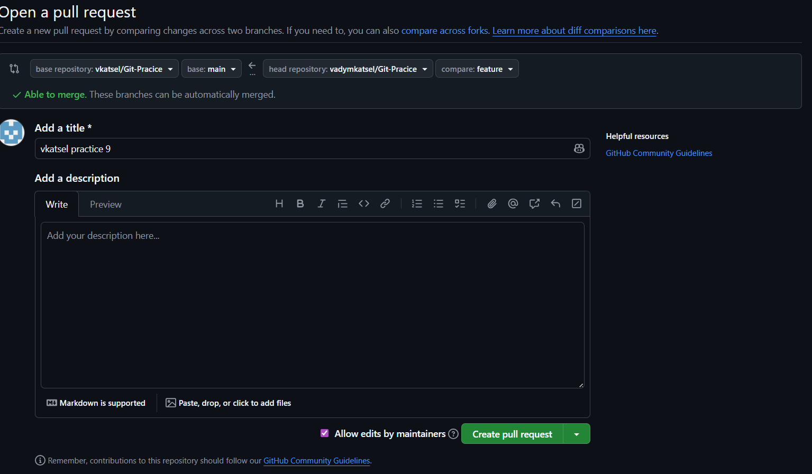

Practice Session 9
Основи роботи з Git
Під час сьогоднішнього воркшопу ви зможете на практиці познайомитися з такими інструментами як Git та GitHub. Ці інструменти є стандартом для індустрії в сфері контролю версій та дозволяють гнучко налаштувати спільну роботу багатьох людей над проєктом одночасно.
Git — це система контролю версій, яка дозволяє ефективно керувати та відслідковувати зміни у вашому проєкті.
GitHub — це платформа, розроблена для того, аби викладати ваші проєкти до глобальної мережі та надати можливість легко працювати над проєктами з іншими.
📝 Cheat Sheet
Repository (Репозиторій / “Репа”): Папка з вашим проєктом, яка має суперсилу — запам’ятовувати всю історію змін кожного файлу. Буває локальним (на вашому комп’ютері) та віддаленим (на сервері GitHub).
Commit (Коміт): Фіксація або “знімок” стану вашого коду в конкретний момент. У PyCharm це робиться через панель Commit. Ви позначаєте галочками файли, обов’язково пишете повідомлення (що саме змінили) і зберігаєте. Коміт зберігає зміни лише на вашому комп’ютері.
Push (Пуш): Відправка ваших локальних комітів на віддалений сервер (на GitHub). Поки ви не зробите push (зелена стрілочка вгору↗ в PyCharm), ніхто у світі ваших змін не побачить.
Pull (Пул): Завантаження нових змін із віддаленого сервера на ваш комп’ютер (синя стрілочка вниз↙ в PyCharm). Це оновлює ваш локальний код до найсвіжішої версії.
Fork (Форк): Ваша особиста копія чужого репозиторію. Робиться не в PyCharm, а прямо на сайті GitHub. Дозволяє вільно експериментувати з кодом, не ризикуючи зламати оригінальний проєкт викладача чи колеги.
Branch (Гілка): Ізольована копія коду всередині репозиторію. Ви ніби відгалужуєтесь від головної лінії (main), безпечно пишете свою функцію, а потім зливаєте її назад. Керування гілками у PyCharm зазвичай знаходиться в самому правому нижньому куті вікна.
Merge Conflict (Конфлікт злиття): Ситуація, коли дві людини одночасно змінили один і той самий рядок у файлі, і Git не знає, чий варіант правильний. PyCharm має зручне вікно “Resolve Conflicts” із трьома колонками: зліва — ваш код, справа — код з сервера, по центру — фінальний результат, який ви збираєте вручну.
Pull Request (PR): Запит на сайті GitHub, у якому ви просите власника оригінального репозиторію перевірити ваш код і додати його до головного проєкту.
🔎 Експерименти з GitHub та Git
Сьогодні ми симулюємо реальний процес командної розробки. Ваше завдання — написати логіку для визначення того, чи отримає студент фінансування на основі його оцінок.
Але робота програміста рідко буває ізольованою. Поки ви будете писати свій код, адміністрація оновить списки студентів в головному репозиторії. Вам доведеться не лише написати працюючий код, але й навчитися синхронізувати свою локальну версію з оновленнями колег та розв’язувати конфлікти версій.
Fork
Перш ніж починати роботу над проєктом, нам потрібен сам репозиторій, в якому ми будемо працювати. Для того, аби отримати доступ до головного репозиторію вам потрібно зробити Fork — операцію, яка надає вам власну копію репозиторію на платформі GitHub.
Перш за все, перейдіть за посиланням на головний репозиторій
Після цього, натисність на кнопку Fork у верхній частині екрану

Перед Вами з’явиться меню конфігурації репозиторію. Натисніть кнопку Fork, і магія - ви маєте власну копію головного репозиторію!
Clone
Тепер, коли в нас є власна копія репозиторію, нам потрібно якось з ним працювати. Поки вона є тільки на GitHub ми не можемо прямо писати внеї код та працювати повноцінно.
Для того, аби репозиторій також був на вашому комп’ютері, нам потрібно зробити операцію git clone, яка створить локальну копію репозиторію.

Branching
І тепер, коли ми нарешті маємо наш проєкт в IDE, правилом хорошого тону є створення окремої гілки для імплементації нових функцій програми.
Для цього створімо гілку “gpa-calculation”

Implement
І найцікавіше - ваше головне завдання. Оскільки ви долучилися до університетської IT команди, вашою першою задачею стала розробка алгоритму для визначення чи отримає студент фінансування. Для цього вам потрібно імплементувати функцію сan_get_funding().
Студент, що отримує фінансування, має відповідати наступним умовам: - GPA > 80 - Немає оцінок менше за 60
Функція має повертати True або False в залежності від оцінок студента
Вхідні дані: Двовимірний список з оцінками студентів students_grades
Кожен вкладений список відповідає одному студенту. Елементи вкладеного списку — це цілі числа від 0 до 100.
Вихідні дані: Значення True або False
Commit
Після цього, аби зафіксувати вашу роботу, вам потрібно зробити коміт - знімок стану вашого файлу з кодом. Це зафіксує зміни, які ви внесли в історії гіта, як певну точку, з якою потім можна буде взаємодіяти.
Для цього, відкрийте бокове меню налаштування коміту, оберіть файли, які хочете додати, та напишіть змістовне повідомлення про виконану роботу. Наприклад:

Repeat!
І от перед вами одразу ж постає наступна задача. На тій же гілці, реалізуйте в main.py просте обрахування статистики оцінок студентів. Вам потрібно вивести на екран наступну інформацію:
- Скільки студентів отримали фінансування
- Який середній GPA у всіх студентів
- Який середній GPA у тих студентів, що отримали фінансування
Скористайтеся функцією, написаною раніше аби визначити чи отримає студент фінансування і використайте цикл for, аби порахувати статистичні дані.
Після цього, зробіть ще один коміт, аби закріпити вашу роботу
Git Push and PR
І ось, нарешті, настав той момент, коли всі задачі виконані. Але от халепа! Ви перевіряєте свій GitHub, і розумієте, що там немає ані вашої гілки, ані вашого написаного коду.
Для того, аби виправити це неподобство, вам потрібно зробити Push - операцію, яка надсилає зміни з вашого локального репозиторію до віддаленго (того, що знаходиться на серверах GitHub)
Для цього, після того як ви зробили коміт оберіть Push та необхідну гілку в інтерфейсі Pycharm


Коли ви переконаєтеся, що у вашому віддаленому репозиторії з’явилися зміни, вам також потрібно надіслати Pull Request для того, аби запропонувати додати зміни в головний репозиторій.


На цьому етапі ви освоїли базовий алгоритм командної роботи над проєктом, з чим Вас можна привітати!
Цей алгоритм може варіюватися та змінюватися в залежності від поставлених задач та контексту, але він визначає основу командної роботи над проєктом.